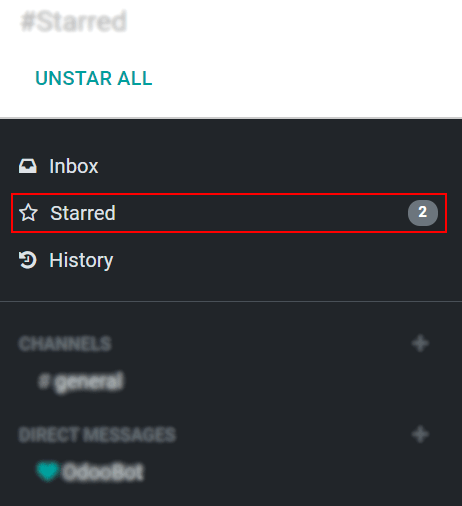
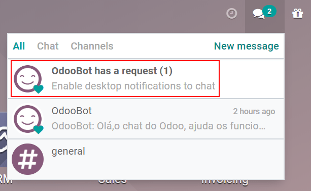

Discuss¶
Odoo Discuss is an internal communication app that allows users to connect through messages, notes, and file sharing, either through a persistent chat window that works across applications, or through the dedicated Discuss dashboard.
Choose notifications preference¶
Access user-specific preferences for the Discuss app by navigating to .

By default, the Notification field is set as Handle by Emails. With this
setting enabled, a notification email will be sent by Odoo every time a message is sent from the
chatter, a note is sent with an @ mention (from chatter), or a notification is sent for a record
that the user follows. Something that triggers a notification is changing of the stage (if an emailis configured to be sent, for example if the task is set to Done).
By choosing Handle in Odoo, the above notifications are shown in the Discuss app’s inbox. Messages can have the following actions taken on them: respond with an emoji by clicking Add a Reaction, or reply to the message by clicking on Reply. Additional actions may include starring the message by clicking Marked as Todo, or pinning the message by selecting Pin or even mark the message as unread by selecting Marked as unread.

Clicking Mark as Todo on a message causes it to appear on the Starred page, while clicking Mark as Read moves the message to History.
Start chatting¶
The first time a user logs in to their account, OdooBot sends a message asking for permission to send desktop notifications for chats. If accepted, the user will receive push notifications on their desktop for the messages they receive, regardless of where the user is in Odoo.
Tip
To stop receiving desktop notifications, reset the notifications settings of the browser.
To start a chat, go to the app and click on the + (plus) icon next to Direct Messages or Channels in the left menu of the dashboard.

A company can also easily create public and private channels.
Mentions in the chat and on the chatter¶
To mention a user within a chat or the chatter, type @user-name; to refer to a channel, type
#channel-name. The user mentioned will be notified in their inbox or through an email, depending
on their communication settings.
Tip
When a user is mentioned, the search list (list of names) suggests values first based on the task’s followers, and secondly on employees. If the record being searched does not match with either a follower or employee, the scope of the search becomes all partners.
User status¶
It is helpful to see what colleagues are up to and how quickly they can respond to messages by checking their status. The status is shown on the left side of a contact’s name on the Discuss sidebar, on the messaging menu and when listed in the chatter.
Green = online
Orange = away
White = offline
Airplane = out of the office